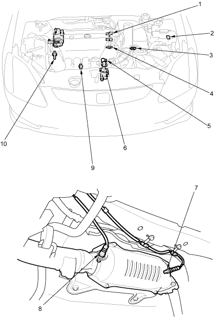

 |
- TOP DEAD CENTRE (TDC) SENSOR
Troubleshooting, page 11-75
Replacement, page 11-93
- ELECTRICAL LOAD DETECTOR (ELD)
Troubleshooting, page 11-72
- INTAKE AIR TEMPERATURE (IAT) SENSOR
Troubleshooting, page 11-61 in the 2001 Civic Shop Manual
Replacement, page 11-94
- ENGINE COOLANT TEMPERATURE (ECT) SENSOR
Troubleshooting, page 11-56
Replacement, page 11-93
- MANIFOLD ABSOLUTE PRESSURE (MAP) SENSOR
Troubleshooting, page 11-59 in the 2001 Civic Shop Manual
- THROTTLE POSITION (TP) SENSOR
Troubleshooting, page 11-58
- SECONDARY HEATED OXYGEN SENSOR (SECONDARY HO2S) (SENSOR 2)
Troubleshooting, page 11-73 in the 2001 Civic Shop Manual
Replacement, page 11-95
- PRIMARY HEATED OXYGEN SENSOR (PRIMARY H02S) (SENSOR 1)
Troubleshooting, page 11-61
Replacement, page 11-92
- KNOCK SENSOR
Troubleshooting, page 11-67
Replacement, page 11-94
- CRANKSHAFT POSITION (CKP) SENSOR
Troubleshooting, page 11-88 in the 2001 Civic Shop Manual
Replacement, page 11-92
|